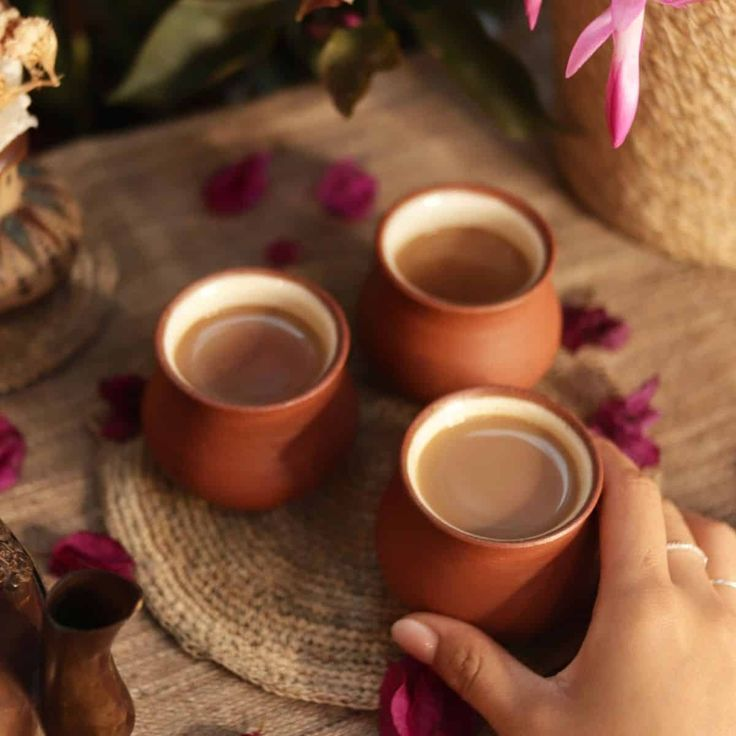
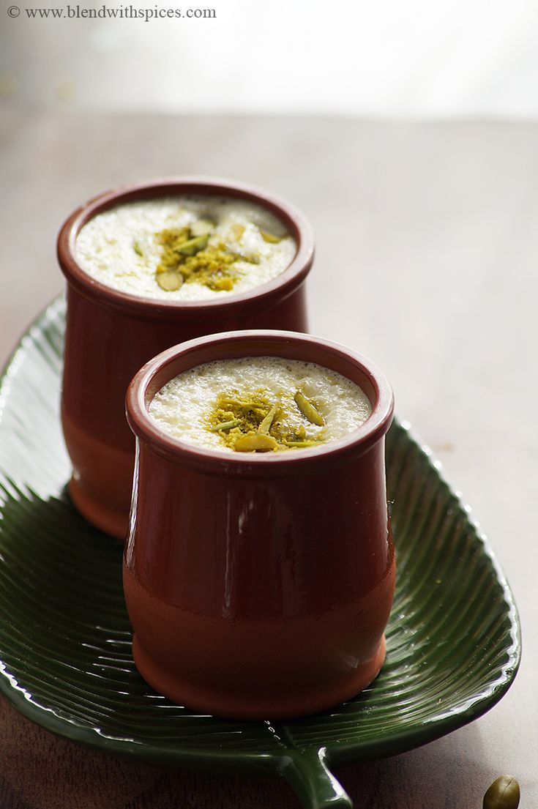
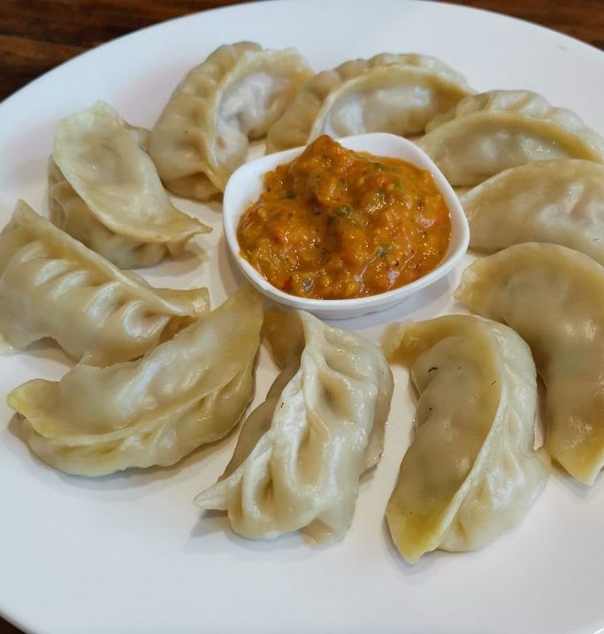
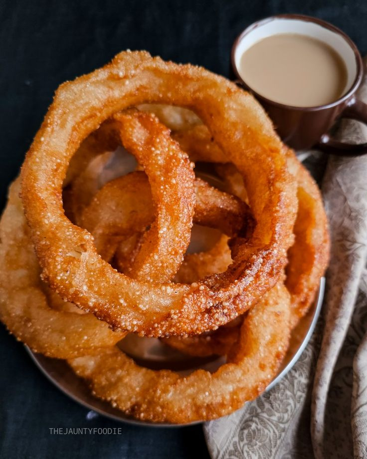
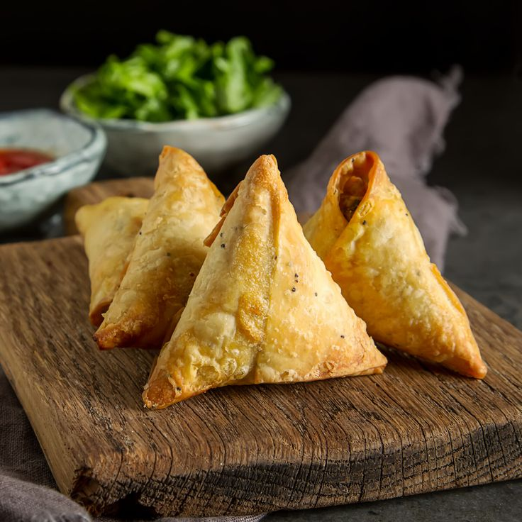
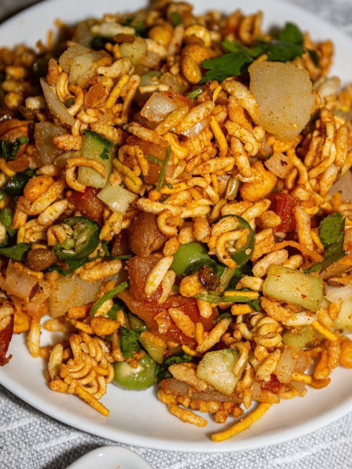

Traditional Nepali Beverages
Experience the authentic flavors of Nepal through our carefully crafted beverage selection:
- Masala Chai - A rich, spiced tea blend with cardamom, ginger, and cloves 
- Butter Tea (Cha) - Traditional Tibetan-style tea with yak butter
- Lassi - Refreshing yogurt-based drink in sweet and salty varieties 
- Local Coffee from Himalayan Regions(Local coffee from #coffee )
Nepali Snacks and Light Meals
Complement your drink with traditional Nepali cuisine:
- Momos - Steamed dumplings with vegetable or meat fillings 
- Sel Roti - Traditional sweet bread made during festivals 
- Samosa - Crispy pastry filled with spiced potatoes 
- Chatpate - Spicy street-style snack mix 